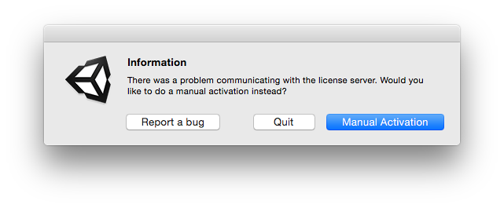
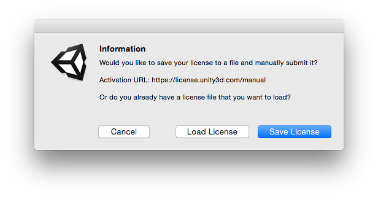
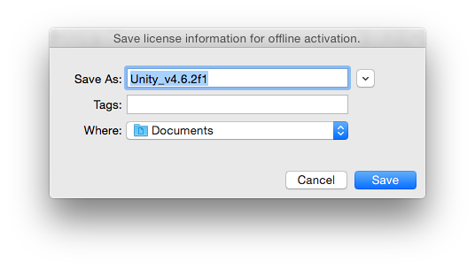
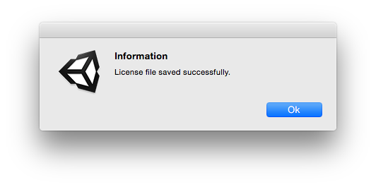
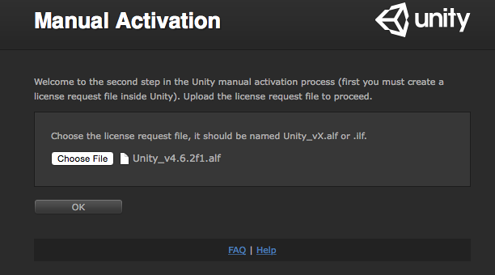
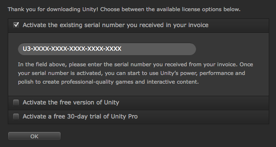

If Online Activation fails, if you do not have an internet connection or you e.g. are behind a firewall not allowing Unity to contact the license server, the Editor will automatically attempt to perform a manual activation.
Follow the steps here if to manuall activate Unity on your machine. Note that you need to have access to a machine with internet access, as part of this process, but doesn’t have to be the machine on which you are trying to activate Unity.
1. Open Unity. If Unity cannot contact the license server, you will be met with the window below.

When this window appears; Click “Manual Activation”
2. Click “Save License”

3. Save the “License File” in a directory of your choice. (Its a good idea to create a new folder on your desktop named “Licenses”).


Now the license file is saved. This is a empty license file and in order for it to be used with Unity we will now need to tie a serial number to it and place it somewhere unity can access it.
The next steps will requires internet access. If the machine doesn’t have internet access, you can copy the file saved above to e.g. a USB and perform these steps on another machine.
4. Go to the Manual Activation Page.
5. Upload the “License File” we saved earlier and click “OK”

6. You will now be presented with an activation window just as you would find in the editor when activating normally.

You have 3 options for activating:
| Activate Existing Serial: | For Users who have a serial number starting with R3, U3, T3 or E3 |
| Activate Free: | Activates the free version of the editor. |
7. Click “Download License”.
Moving back into Unity, you can now select the “Load License” button. Again, this will open up your directories within your hard drive. Now, select the file that you just saved via the Web form and click “OK”.
If you already have Unity activated, and e.g. need to update your license, see the Managing your Unity license page.
For any further assistance, please contact support@unity3d.com.